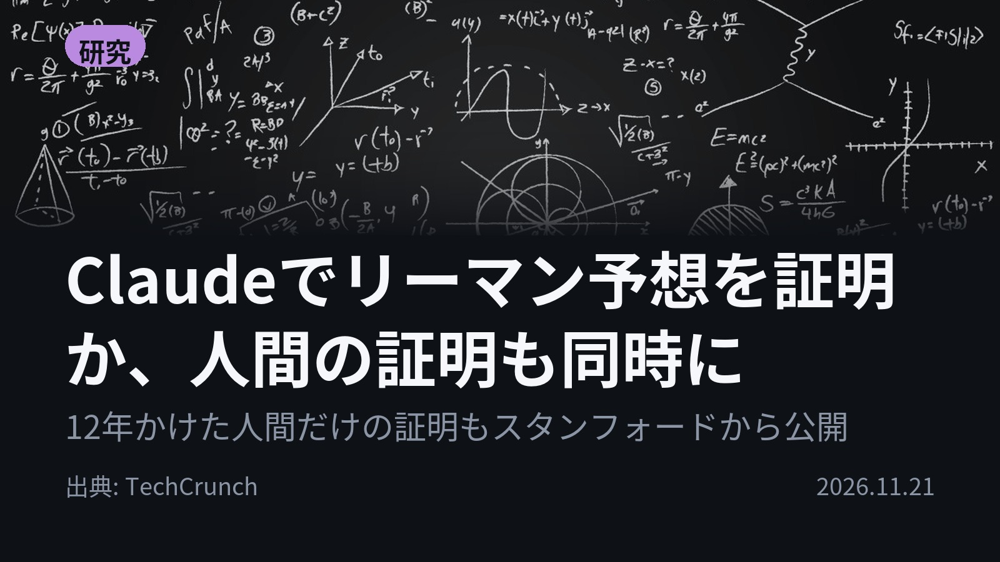
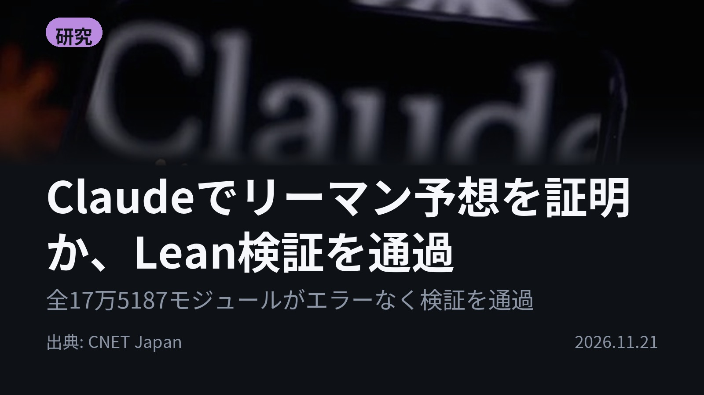
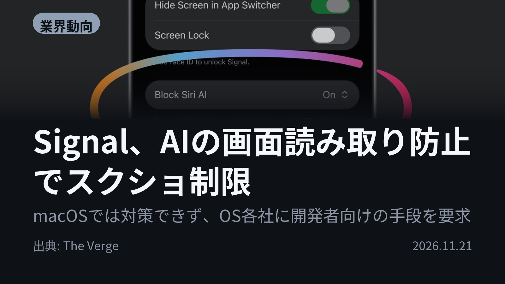
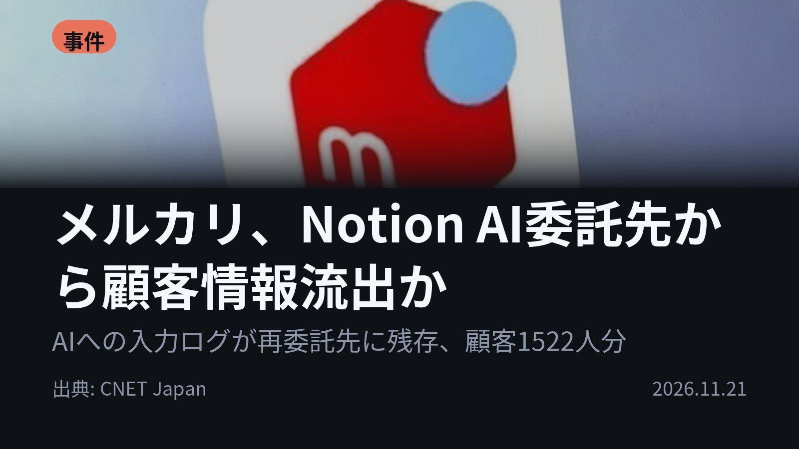
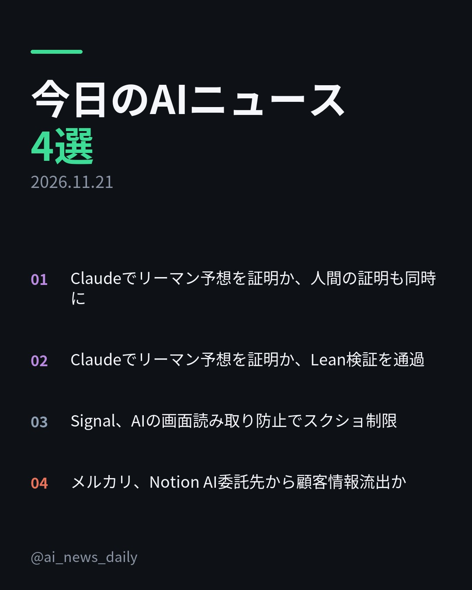
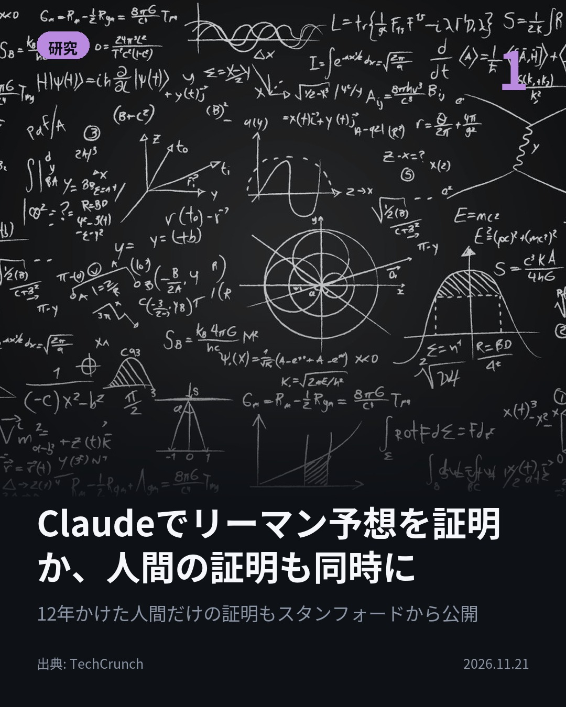
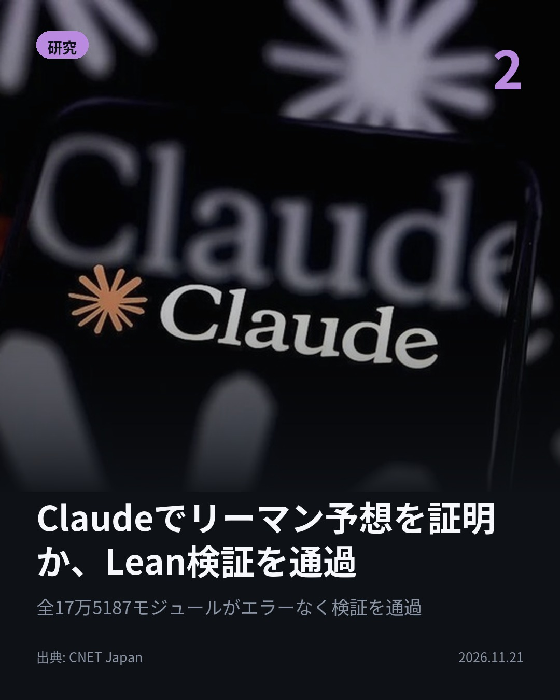
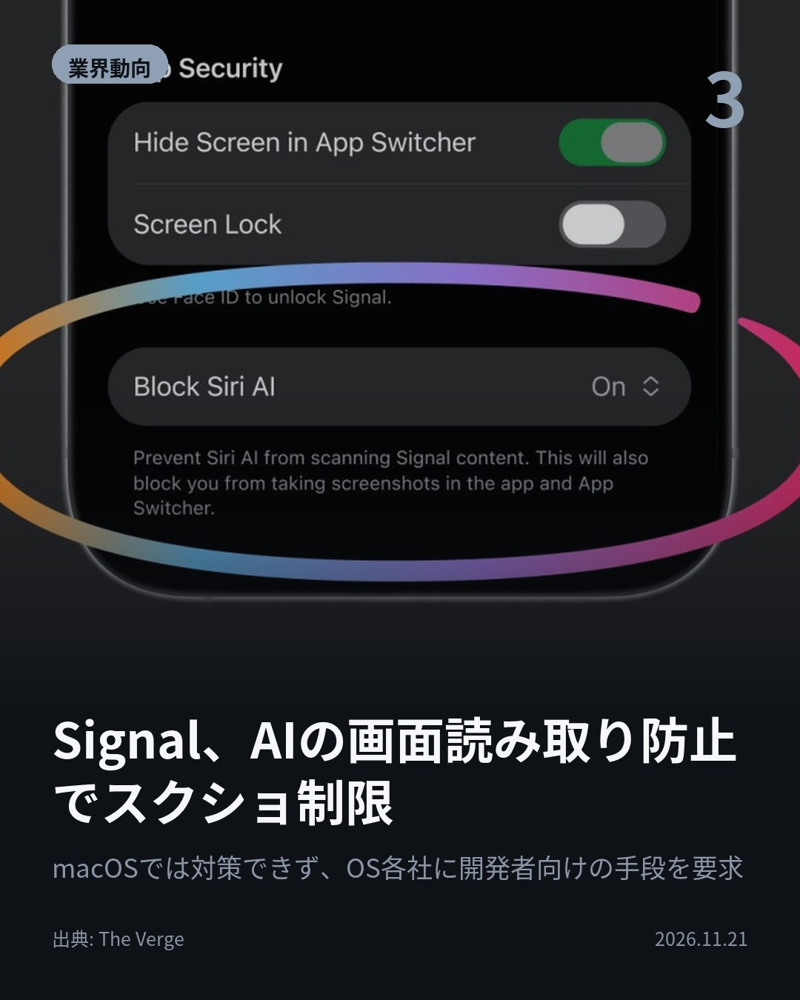
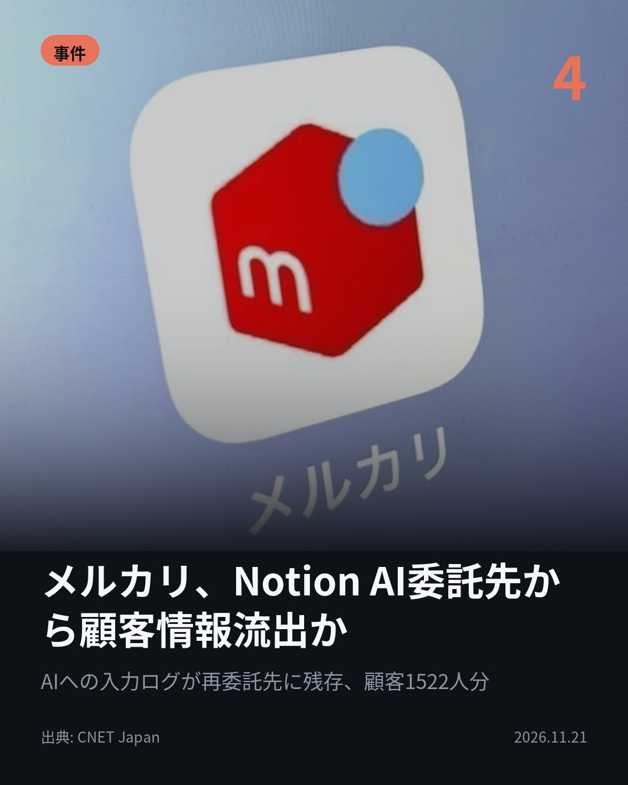

今日のAIニュース 下書き
2026-11-21 生成 11/21 10:22
⚠ ファクト照合で要確認の項目があります。
各ニュースの警告を確認してから投稿してください。
X（4投稿）
Claudeでリーマン予想を証明か、人間の証明も同時に
原題: AI claimed a solution to the 167-year-old Riemann hypothesis — and a human did, too

AIの証明と、AIなしの証明。リーマン予想で相次いで出た。 Alpöge氏はClaudeと見つけたLean証明を公開。スタンフォードではMasullo氏が12年かけた「AIなし」の証明草稿も出た。 #AI #Claude（出典: TechCrunch）
重み 196 / 280（見た目 124字）
要確認:
［固有名詞］リーマン — この語が本文に見つかりません
［固有名詞］スタンフォード — この語が本文に見つかりません
［固有名詞］ポスドク — この語が本文に見つかりません
［固有名詞］TechCrunch — この語が本文に見つかりません

Claudeでリーマン予想を証明か、Lean検証を通過
原題: Claudeを使い「リーマン予想」を証明か Anthropic数学者が発表 Lean検証も通過、数学界が精査へ

全17万5187モジュール、エラーゼロ。 Claudeを使ったリーマン予想の証明を、MITのSutherland氏が検証。別の検証器nanodaでも通過。ただしクレイ数学研究所は11月21日時点で「未解決」のまま。 #AI #リーマン予想（出典: CNET Japan）
重み 216 / 280（見た目 133字）
要確認:
［固有名詞］エラーゼロ — この語が本文に見つかりません

Signal、AIの画面読み取り防止でスクショ制限
原題: Signal is blocking Gemini and Siri AI from reading your screen

Signalがスクショを制限した、なぜか。 iOS 27とAndroidで、SiriやGeminiなどOS組み込みAIに画面を読ませないため。macOSでは対策できず、OS各社に開発者向けの手段を求めた。 #AI #Signal（出典: The Verge）
重み 194 / 280（見た目 127字）
要確認:
［固有名詞］スクショ — この語が本文に見つかりません
［固有名詞］エージェント — この語が本文に見つかりません
［固有名詞］ファイルシステム — この語が本文に見つかりません
［固有名詞］アクセス — この語が本文に見つかりません
［固有名詞］Verge — この語が本文に見つかりません

メルカリ、Notion AI委託先から顧客情報流出か
原題: メルカリ、1522人分の顧客情報流出の恐れ Notion AIの委託先に不正アクセスで

AIへの入力が、委託先から漏れた恐れ。 Notion AIの処理委託先Fireworks AIが不正アクセスを受け、メルカリ顧客1522人分が対象。従業員の10月5〜24日の入力と回答の記録に含まれていた。 #生成AI #NotionAI（出典: CNET Japan）
重み 211 / 280（見た目 133字）

Instagram（カルーセル 6枚）


1. 表紙


2. ニュース


3. ニュース


4. ニュース


5. ニュース

6. CTA
Claudeを使ったリーマン予想の証明、全17万5187モジュールが機械検証を通過。 一方で、AIとデータの守り方をめぐるニュースも2本ありました。 1. Anthropicの数学者Alpöge氏が、Claudeと試行錯誤しながら見つけたLean証明を公開。同じころスタンフォードでは、ポスドクのMasullo氏が12年かけた「AIなし」の一般リーマン予想の証明草稿を公開した。こちらはLeanで書かれておらず、正しいかどうかはまだ判断できない。(TechCrunch) 2. Leanは、推論の正しさをコンピューターで確かめる仕組み。Alpöge氏によると、終盤でClaudeが重要な着想を示した。100万ドルの懸賞の審査対象になるには、掲載から2年以上たち、数学界で広く受け入れられる必要がある。(CNET Japan) 3. スクショ制限は設定で解除できるが、Signalは「AIエージェントに内容が見える恐れがある」と警告。ファイルシステム経由のアクセスは防げず、対策は「不完全」だと認めている。昨年もMicrosoftのRecall対策で同じ手を打った。(The Verge) 4. 対象の顧客1522人のうち、1061人は顧客識別番号のみ。ほかに取引先571人、採用応募者169人、派遣社員や退職者ら1534人の情報も含まれる。業務システムの認証情報はすべて無効化・再発行済みで、不正ログインは確認されていない。(CNET Japan) AIは難問を解く道具にもなれば、データの抜け道にもなる。今日はその両面が並びました。 毎朝4本、AIニュースを要点だけまとめています。見返したい人は保存を、取りこぼしたくない人はフォローを。 #AI #生成AI #人工知能 #テクノロジー #AIニュース #ArtificialIntelligence #TechNews #Claude #Anthropic #AI活用 #プライバシー #情報セキュリティ #Cybersecurity #リーマン予想 #RiemannHypothesis #数学 #Math #Lean #Signal #NotionAI #メルカリ #個人情報
923字（Instagram上限 2,200字）
この日の選定理由
Claudeでリーマン予想を証明か、人間の証明も同時に
167年来の難問で、AIを使った形式証明と人間だけによる証明がほぼ同時に出てきました。数学の進め方そのものの転換点になり得ます。
Claudeでリーマン予想を証明か、Lean検証を通過
AIを使った証明が機械検証を通過し、ミレニアム懸賞問題の解決に現実味が出てきました。ただし、数学界が正式に認めるまでには時間がかかります。
Signal、AIの画面読み取り防止でスクショ制限
OSに組み込まれたAIエージェントが、アプリ側の暗号化やプライバシー保護を素通りできることが浮き彫りになりました。AIの利便性とプライバシーの衝突を象徴する動きです。
メルカリ、Notion AI委託先から顧客情報流出か
社員が業務AIに入力した内容が、利用者からは見えない再委託先に保存され、そこから漏れました。業務でAIを使う企業には、委託の連鎖まで含めたデータ管理が求められます。